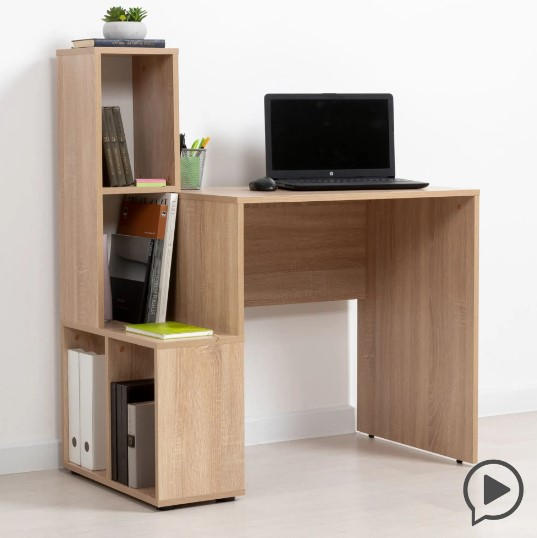

Стол — предмет мебели, имеющий приподнятую горизонтальную или наклонную поверхность и предназначенный для размещения предметов, выполнения работ, принятия пищи, игр, рисования, обучения и другой деятельности.
Первые упоминания о столе как предмете мебели встречаются в Древнем Египте на наскальной надписи и датируются 2650 годом до н. э.
Компьютерный стол Моби Драйв 97.3x112.2x55.3 см ЛДСП цвет дуб сонома Описание Письменный стол Драйв 12.106 это необходимый предмет мебели для детской и подростковой комнаты, офиса или рабочего места. Анатомически правильная высота компьютерного стола позаботиться о здоровье школьника (ребенка) и студента, формировании осанки и сохранении зрения. За деревянным столиком ученик будет сидеть с прямой спиной и согнутыми под прямым углом локтями в течение длительного времени. Комфорт и высокая Мы производитель и создаем корпусную мебель больше 20 лет. Дорожим качеством и репутацией выпускаемой продукции. Продаем мебель для дома недорого и по самым приятным ценам.
Характеристики
Ширина (см) 97.3;
Высота (см) 112.2;
Глубина (см) 55.3;
Цвет Дуб сонома;
Марка МОБИ;
Серия Драйв;
Основной материал ЛДСП;
Вес товара в индивидуальной упаковке (кг) 23.1;
Ширина товара в индивидуальной упаковке (см) 58.9;
Высота товара в индивидуальной упаковке (см) 10.5;
Глубина товара в индивидуальной упаковке (см) 79.6;